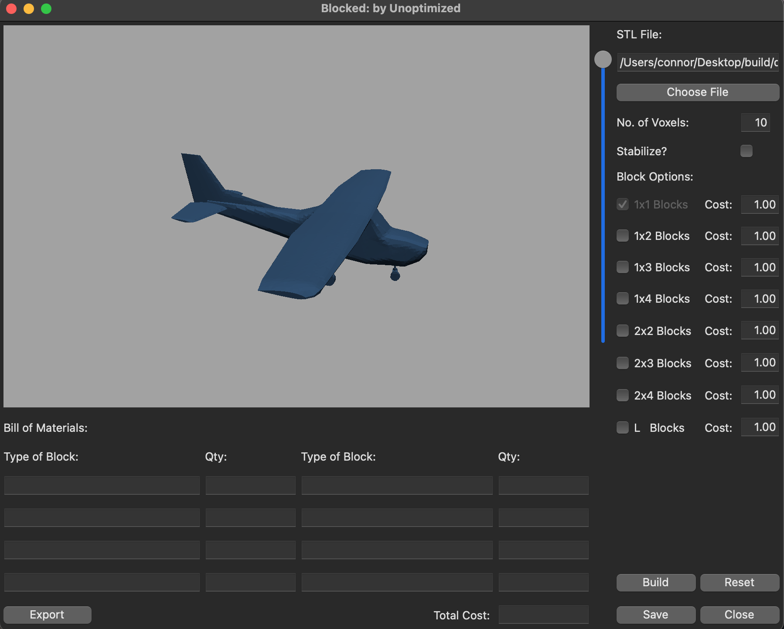
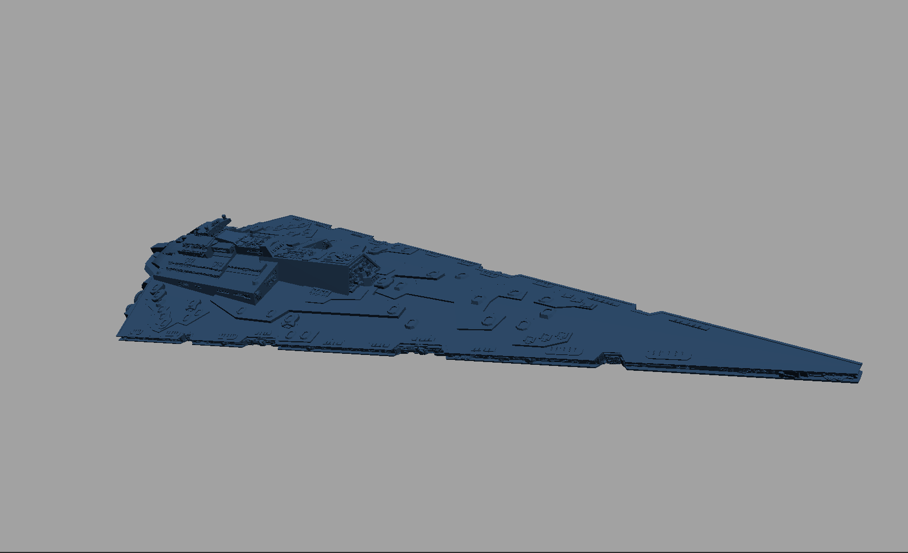

Blocked - A Voxelization Application

| Overview & Contributions | This course project reinforced my group coding knowledge and skills, terminal scripting and using git
from the terminal. I learned about wxWdigets, user experience design, CMake unit tests and building projects
which feature multiple third party libraries.
My roles on this project were:
|
| Introduction | Our program is motivated by an engineering problem that we
are facing in the Mechanical and Artificial Intelligence Lab (MAIL),
where we are working on additive manufacturing using a drone. For
the project, we are planning to have the drone assemble structures
out of pre-manufactured (through 3D printing) building blocks.
However, in order to do this, we need to have a way of taking the
goal structure (in the form of an STL file) and figuring out how
best to build it out of a set of predefined blocks. To achieve this goal, the proposed program seeks to convert an STL file into instructions for building it using blocks. The program plays a similar role to a 3D printer’s slicer program, which converts a 3D model into instructions for the printer to follow. This program is not limited to the specific application of drone additive manufacturing but can also be useful for building any structure out of smaller units. |
| Methods | Our proposed program will input an STL provided by the user and convert it
to a block structure. At its simplest, the block structure will include 1x1
bricks. For a more complex implementation, the graphical user interface
(GUI) will also allow the user to select what other block types and dimensions
they wish to include in the final model (e.g. 2x4 bricks, 1x3 plates, etc.)
Once the block structure is complete, the user will have an option to run a structural stability analysis. This provides the user with a rating of how stable the object is in the input orientation. The program will also output a bill of materials (BOM) including each type of block and the quantity required. The BOM will also include the amount of filament required to print each. Lastly, the program will provide the user with layer wise steps of how the model is built from the base up. |
| Results | The final application is able to load in any binary stl file, voxelize and merged into user selected blocks. The
bill of materials is automaticaly populated based on the merge results. There is an added slider feature to allow the user to
look at specific build layers. The application features the ability to
check the blocked structure for bottom -> up stability and color unsupported blocks red. Finally the user can export the
bill of materials, the blocked structure, and also import previously saved blocked files.




|
| Discussion |
The results of the program demonstrate its effectiveness in achieving the outlined objectives.
The program is capable of loading in any binary STL file, voxelize, and merge it into the user-selected
blocks. The bill of materials is automatically populated based on the merge results, and the program
features a slider to allow the user to view specific build layers. The program also checks the block
structure for bottom-up stability, coloring unsupported blocks red. Finally, the user can export the
bill of materials, blocked structure, and import previously saved blocked files, making it a comprehensive
solution for building complex structures out of smaller units.
Overall, the proposed program outlined in this discussion section offers an innovative solution to the engineering problem faced by the Mechanical and Artificial Intelligence Lab (MAIL). By providing a versatile and comprehensive tool for converting an STL file into instructions for building structures out of pre-manufactured blocks, the program has the potential to significantly advance the field of additive manufacturing using drones. |
| Application Link | A link to the game repository can be found here: |